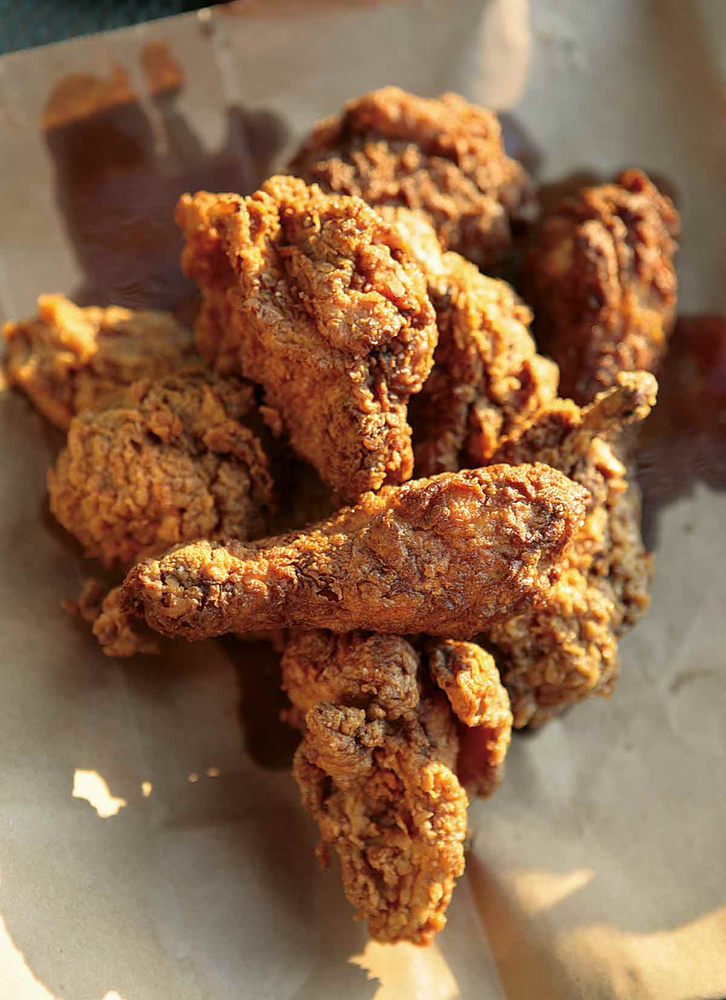

Cajun Fried Chicken

Cajun Fried Chicken
This Cajun fried chicken is bathed in buttermilk and turns out crisp, slightly spicy, perfectly
deep-fried loveliness thanks to its Southern charm and Louisiana personality.
Ingredients
- One (3 to 4 pound) chicken, cut into 10 pieces
- 2 tsp salt
- 1 tsp freshly ground black pepper
- 1/2 tsp cayenne pepper
- 1/4 tsp ground white pepper
- 1/2 tsp garlic powder
- 5 dashes Louisiana hot sauce
- 1 cup buttermilk, (low-fat or full-fat), shaken well
- 3 cups lard, vegetable shortening, mild vegetable oil, or bacon drippings
- 3 cups all-purpose flour
Steps
-
Pat the chicken dry. Place the chicken in a large bowl, season it with the salt, pepper, cayenne,
white pepper, garlic powder, and hot sauce, and toss to coat evenly. Cover and refrigerate for at
least 1 hour and up to 1 day. The longer the chicken stays in the fridge, the better seasoned your
chicken will be
-
Remove the chicken from the bowl, allowing any liquid to drip back into the bowl, and place it in a
clean bowl. Pour the buttermilk over the top
-
Heat the lard, vegetable shortening, or bacon fat in a large cast-iron skillet until it registers
350°F on an instant-read thermometer or a pinch of flour immediately sizzles when dropped into the
fat.
-
While the oil heats, remove the chicken from the buttermilk, allowing any excess liquid to drip off,
and place the chicken in yet another clean bowl.
- Sprinkle the chicken with the flour and toss to coat.
-
When the oil is ready, add the chicken pieces to the skillet in batches, starting with the larger
pieces and shaking off any excess flour before adding them to the oil. Do not crowd the skillet. For
the crispiest results, you want ample room around each piece in the oil. Cook the chicken, using
tongs to turn the chicken occasionally, until golden brown and cooked through, about 8 minutes on
each side. Keep an eye on the temperature of the oil, making sure the oil doesn't get too hot.
-
Transfer the fried chicken to a plate lined with paper towels or a brown paper bag. Return the oil
to temperature before frying each subsequent batch of chicken. The smaller pieces will take about 6
minutes on each side.